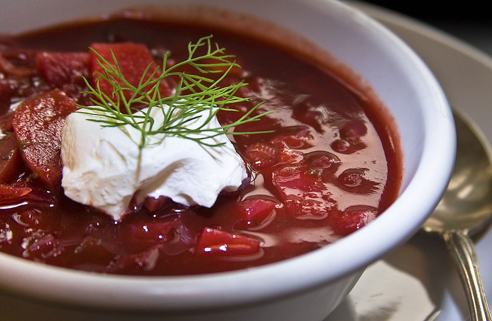

Borscht
home

Description
Borscht is a sour soup common in Eastern Europe and Northern Asia.
In English, the word "borscht" is most often associated with the
soup's variant of Ukrainian origin, made with red beetroots as one
of the main ingredients, which give the dish its distinctive red
color. The same name, however, is also used for a wide selection
of sour-tasting soups without beetroots, such as sorrel-based
green borscht, rye-based white borscht, and cabbage borscht.
Ingredients
- 1 ½ cups thinly sliced potatoes
- 1 cup thinly sliced beets
- 4 cups vegetable stock or water
- 2 tablespoons butter
- 1 ½ cups chopped onions
- 1 teaspoon caraway seed (Optional)
- 2 teaspoons salt
- 1 celery stalk, chopped
- 1 large carrot, sliced
- 3 cups coarsely chopped red cabbage
- black pepper to taste
- ¼ teaspoon fresh dill weed
- 1 tablespoon cider vinegar
- 1 tablespoon honey
- 1 cup tomato puree
- sour cream, for topping
- chopped tomatoes, for garnish
Directions
- Place sliced potatoes and beets in a medium saucepan
over high heat; cover with stock, and boil until
vegetables are tender. Remove potatoes and beets
with a slotted spoon, and reserve stock.
- Melt butter in a large skillet over medium heat.
Stir in onions, caraway seeds, and salt; cook
until onions become soft and translucent. Then
stir in celery, carrots, and cabbage. Mix in
reserved stock; cook, covered, until all vegetables
are tender, about 10 minutes.
- Add potatoes and beets to the skillet. Season with
black pepper and dill weed. Stir in cider vinegar,
honey, and tomato puree. Cover, reduce heat to medium
low, and simmer at least 30 minutes. Serve topped
with sour cream, extra dill weed, and chopped fresh tomatoes.